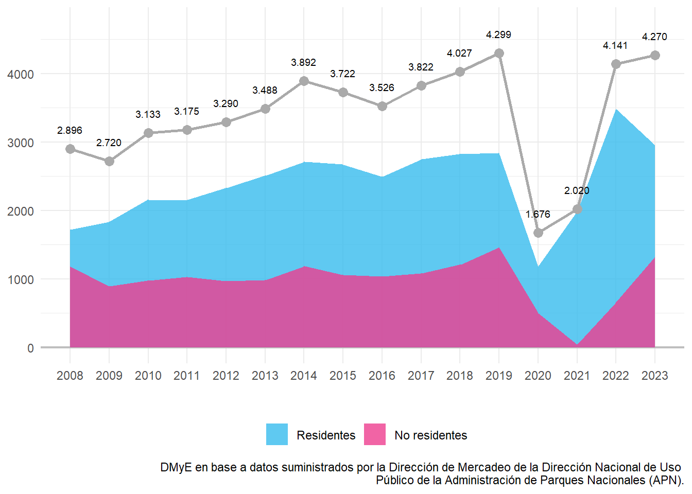
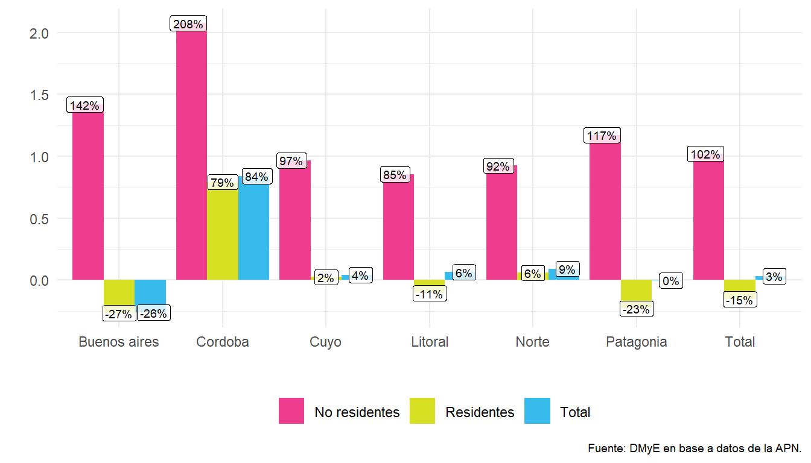
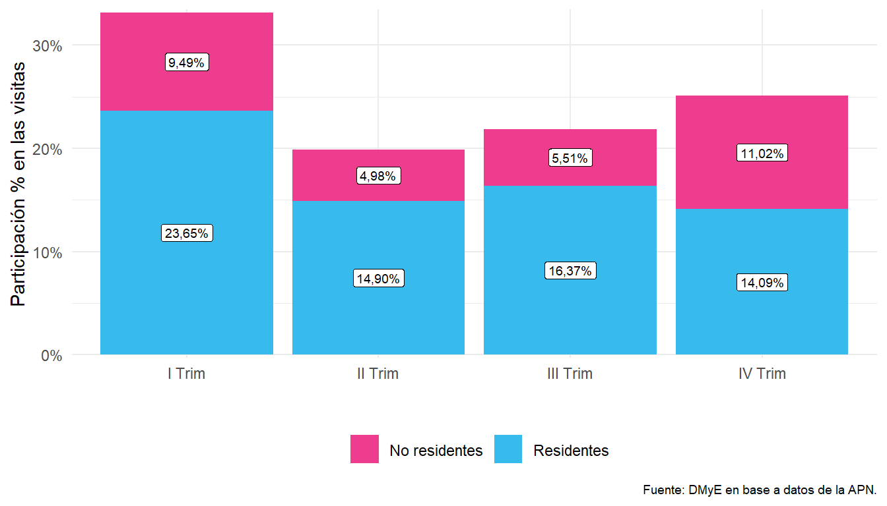
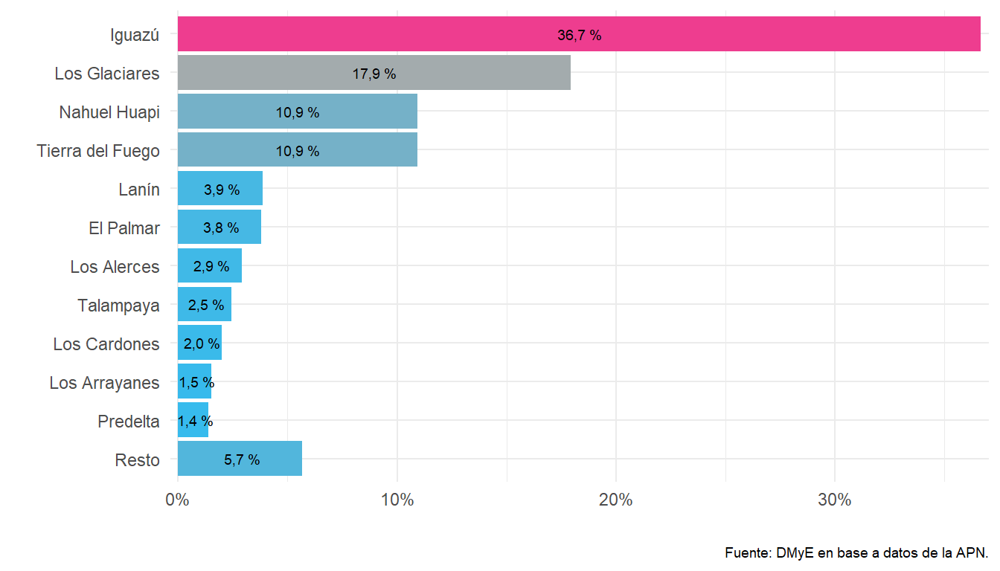
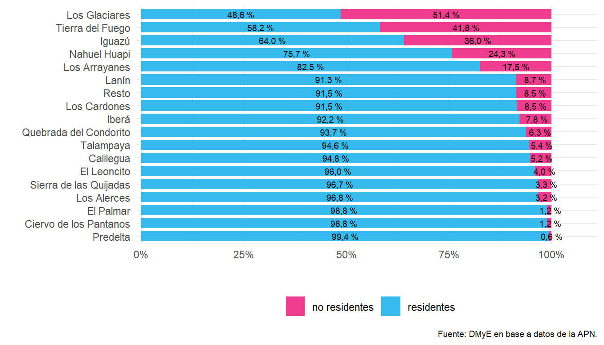

Capítulo 5 Parques Nacionales en Argentina
5.1 Introducción
Este capítulo presenta la evolución anual de las visitas de turistas a los Parques Nacionales en el país. A partir de información del Registro Nacional de Autorizaciones, Recaudaciones e Infracciones (RENARI) y de las Intendencias de las distintas áreas protegidas, la Administración de Parques Nacionales recopila y procesa los datos de los visitantes. Dicha información permite la clasificación de las visitas de los turistas en residentes en el país y no residentes en 38 Parques Nacionales en Argentina5.
5.2 Visitas a los Parques Nacionales
En el año 2023 se registraron 4,27 millones de visitas a los Parques Nacionales, con un incremento del 3,1% respecto del 2022 (todavía afectado por la situación sanitaria de la pandemia de Covid-19), ubicándose en la serie histórica en segundo lugar, tras registrarse el récord de visitas en el 2019.
Figura 5.1: Visitas a las áreas protegidas nacionales por condición de residencia. Serie histórica, en miles. Años 2008-2023.
Los turistas residentes cayeron un 15,5%, mientras que los turistas no residentes registraron un crecimiento del 102,1%.
| Año | Visitas | |||||
|---|---|---|---|---|---|---|
| Total | Var % i.a. | Residentes | Var % i.a. | No residentes | Var % i.a. | |
| 2008 | 2.895.366 | /// | 1.715.714 | /// | 1.179.652 | /// |
| 2009 | 2.719.642 | −6,1% | 1.830.514 | 6,7% | 889.128 | −24,6% |
| 2010 | 3.133.363 | 15,2% | 2.158.168 | 17,9% | 975.195 | 9,7% |
| 2011 | 3.175.047 | 1,3% | 2.148.114 | −0,5% | 1.026.933 | 5,3% |
| 2012 | 3.290.404 | 3,6% | 2.325.958 | 8,3% | 964.446 | −6,1% |
| 2013 | 3.487.813 | 6,0% | 2.507.819 | 7,8% | 979.994 | 1,6% |
| 2014 | 3.891.995 | 11,6% | 2.709.385 | 8,0% | 1.182.610 | 20,7% |
| 2015 | 3.722.415 | −4,4% | 2.668.979 | −1,5% | 1.053.436 | −10,9% |
| 2016 | 3.526.698 | −5,3% | 2.490.203 | −6,7% | 1.036.495 | −1,6% |
| 2017 | 3.821.623 | 8,4% | 2.743.589 | 10,2% | 1.078.034 | 4,0% |
| 2018 | 4.027.351 | 5,4% | 2.820.968 | 2,8% | 1.206.383 | 11,9% |
| 2019 | 4.298.904 | 6,7% | 2.838.807 | 0,6% | 1.460.097 | 21,0% |
| 20201 | 1.676.078 | −61,0% | 1.175.966 | −58,6% | 500.112 | −65,7% |
| 20212 | 2.019.891 | 20,5% | 1.980.354 | 68,4% | 39.537 | −92,1% |
| 20223 | 4.140.390 | 105,0% | 3.485.669 | 76,0% | 654.721 | 1.556,0% |
| 20233 | 4.269.597 | 3,1% | 2.946.526 | −15,5% | 1.323.071 | 102,1% |
| Fuente: DMyE en base a datos de la APN. | ||||||
| 1 A partir del 16 de marzo los parques nacionales se cerraron a la visita debido al cese de actividades por causa de la crisis sanitaria del covid -19 (Resolución Nro 57 APN). | ||||||
| 2 Entre el 22 y 30 de mayo los parques nacionales se cerraron a la visita en adhesión a las medidas nacionales (Decreto 334/2021); la reapertura a la visita se realizó progresivamente en los meses siguientes, de acuerdo a la evolución de la situación sanitaria de cada provincia. | ||||||
| 3 Dato provisorio. | ||||||
Al comparar los resultados del 2023 con el 2019 (prepandemia), las visitas tuvieron una caída del 0,7%, los residentes tuvieron una caída del 3,8% y los no residentes tuvieron una caída del 9,4%, no alcanzando aún el máximo histórico registrado en el 2019.
En 2023 los parques de la región Patagonia (14 áreas protegidas) concentraron el 48,8% del total de las visitas a los parques nacionales del país (1,7 p.p. menos que en el 2022 y 1,4 p.p. menos si se lo compara con el 2019), mientras que los parques de la región Litoral (10 áreas protegidas) totalizaron un 43,1% (1,3 p.p. más que en el 2022 y 0,2 p.p. menos respecto del 2019). Por otro lado, al observar la distribución según condición de residencia, en el 2023 las visitas de los residentes tuvieron una participación del 64,7% y del 69,2% en las regiones Patagonia y Litoral respectivamente; la participación de las visitas de los no residentes fue de 35,3% y 30,9%, volviendo a los valores prepandémicos.
| Parque Nacional | 20231 | Var i.a. % | Var 2023/2019 | ||||||
|---|---|---|---|---|---|---|---|---|---|
| Total | Residentes | No residentes | Total | Residentes | No residentes | Total | Residentes | No residentes | |
| Total | |||||||||
| Total país | 4.269.597 | 2.946.526 | 1.323.071 | 3,1% | −15,5% | 102,1% | −0,7% | 3,8% | −55,2% |
| Patagonia2 | |||||||||
| Total región | 2.086.112 | 1.350.145 | 735.967 | −0,3% | −23,0% | 117,1% | −3,5% | −4,1% | −55,0% |
| Los Glaciares | 765.922 | 372.088 | 393.834 | 13,5% | −24,1% | 113,1% | −0,7% | 21,0% | −60,2% |
| Nahuel Huapi | 466.020 | 352.927 | 113.093 | 3,9% | −11,5% | 126,9% | 13,0% | 3,6% | −30,6% |
| Tierra del Fuego | 466.000 | 271.314 | 194.686 | 6,1% | −21,7% | 109,7% | 10,5% | 17,1% | −51,2% |
| Lanín | 164.421 | 150.197 | 14.224 | −20,2% | −25,8% | 292,6% | 30,3% | 25,0% | −40,7% |
| Los Alerces | 123.999 | 120.067 | 3.932 | −41,5% | −43,1% | 350,4% | −0,5% | 0,9% | −84,5% |
| Los Arrayanes | 65.189 | 53.810 | 11.379 | −16,0% | −26,2% | 141,8% | −13,9% | −19,5% | −47,0% |
| Monte León | 9.180 | 7.654 | 1.526 | 14,9% | 5,3% | 112,2% | 153,9% | 175,5% | −14,1% |
| Patagonia | 8.903 | 7.864 | 1.039 | −7,6% | −13,9% | 106,6% | /// | /// | /// |
| Lihué Calel | 6.465 | 6.191 | 274 | 41,0% | 37,9% | 191,5% | 5,0% | 4,3% | −58,2% |
| Laguna Blanca | 3.401 | 3.166 | 235 | −10,2% | −14,3% | 152,7% | 28,0% | 26,3% | −38,4% |
| Bosques Petrificados | 3.265 | 2.354 | 911 | −22,7% | −37,8% | 107,0% | −10,2% | −15,0% | −49,2% |
| Perito Moreno | 2.372 | 1.868 | 504 | 27,9% | 15,2% | 116,3% | 130,5% | 208,3% | −44,9% |
| Isla Pingüino | 975 | 645 | 330 | −33,9% | −50,1% | 80,3% | /// | /// | /// |
| Lago Puelo | /// | /// | /// | /// | /// | /// | −100,0% | −100,0% | −100,0% |
| Litoral3 | |||||||||
| Total región | 1.838.072 | 1.270.784 | 567.288 | 6,3% | −10,7% | 85,5% | −1,2% | 8,2% | −55,4% |
| Iguazú | 1.565.136 | 1.002.385 | 562.751 | 11,1% | −9,4% | 85,8% | −4,3% | 5,1% | −55,6% |
| El Palmar | 161.773 | 159.902 | 1.871 | −20,0% | −20,5% | 80,1% | 49,9% | 49,8% | −13,0% |
| Predelta | 59.464 | 59.116 | 348 | −3,5% | −3,7% | 60,4% | −19,0% | −19,0% | −47,8% |
| Iberá | 19.849 | 18.303 | 1.546 | 2,2% | 1,0% | 18,2% | 42,2% | 51,0% | −28,5% |
| Río Pilcomayo | 11.326 | 11.226 | 100 | −5,2% | −5,0% | −25,4% | 2,4% | 5,2% | −65,9% |
| Mburucuyá | 8.671 | 8.461 | 210 | −0,7% | −1,4% | 42,9% | 23,4% | 22,9% | 0,0% |
| Chaco | 7.381 | 7.244 | 137 | −22,5% | −23,0% | 18,1% | −12,8% | −12,9% | −20,0% |
| El Impenetrable | 2.455 | 2.360 | 95 | −12,7% | −14,6% | 93,9% | 364,1% | 351,2% | 716,7% |
| Colonia Benítez | 1.887 | 1.658 | 229 | −37,7% | −44,8% | 748,1% | −5,7% | −16,6% | 80,0% |
| Formosa | 130 | 129 | 1 | 225,0% | 222,5% | /// | 54,8% | 81,7% | −100,0% |
| Norte4 | |||||||||
| Total región | 230.497 | 214.931 | 15.566 | 9,1% | 5,8% | 92,4% | 15,9% | 17,4% | −48,8% |
| Talampaya | 104.619 | 98.938 | 5.681 | 0,5% | −1,8% | 67,3% | 36,7% | 39,8% | −41,0% |
| Los Cardones | 85.019 | 77.785 | 7.234 | 12,4% | 7,1% | 139,8% | −8,6% | −8,7% | −61,3% |
| Calilegua | 28.267 | 26.784 | 1.483 | 19,2% | 17,9% | 50,9% | 26,5% | 28,6% | −34,6% |
| Aconquija | 4.882 | 4.806 | 76 | 59,2% | 57,6% | 347,1% | 50,8% | 50,1% | −51,4% |
| Nogalar de los Toldos | 2.851 | 2.621 | 230 | 121,7% | 147,3% | 1,8% | 162,5% | 171,6% | 86,8% |
| Laguna de los Pozuelos | 2.160 | 1.626 | 534 | 0,6% | −11,1% | 67,4% | 18,3% | 21,7% | −34,9% |
| Baritú | 1.303 | 1.069 | 234 | 234,1% | 283,2% | 110,8% | 746,1% | 948,0% | 113,5% |
| El Rey | 1.077 | 1.001 | 76 | 138,8% | 127,5% | 590,9% | 38,8% | 36,4% | −73,8% |
| Copo | 199 | 185 | 14 | 61,8% | 62,3% | 55,6% | /// | /// | /// |
| Pizarro | 120 | 116 | 4 | −55,4% | −56,9% | /// | /// | /// | /// |
| Cuyo | |||||||||
| Total región | 61.079 | 58.883 | 2.196 | 4,2% | 2,4% | 96,6% | 30,4% | 32,5% | −53,5% |
| Sierra de las Quijadas | 35.736 | 34.570 | 1.166 | −3,4% | −5,2% | 117,9% | 53,0% | 53,6% | −37,2% |
| El Leoncito | 25.216 | 24.203 | 1.013 | 16,6% | 15,0% | 74,1% | 7,6% | 10,5% | −62,4% |
| San Guillermo | 127 | 110 | 17 | 647,1% | 547,1% | /// | 176,1% | 150,0% | −100,0% |
| Cordoba5 | |||||||||
| Total región | 28.239 | 26.480 | 1.759 | 84,0% | 79,2% | 207,5% | 10,8% | 13,3% | −72,9% |
| Quebrada del Condorito | 27.937 | 26.178 | 1.759 | 97,5% | 92,9% | 207,5% | 9,6% | 12,0% | −72,9% |
| traslasierra | 302 | 302 | /// | −74,9% | −74,9% | /// | /// | /// | /// |
| Buenos aires6 | |||||||||
| Total región | 25.598 | 25.303 | 295 | −26,2% | −26,8% | 141,8% | 292,9% | 290,5% | 238,9% |
| Ciervo de los Pantanos | 25.598 | 25.303 | 295 | −26,2% | −26,8% | 141,8% | 292,9% | 290,5% | 238,9% |
| Fuente: DNMyE en base a datos de la APN. | |||||||||
| 1 Datos provisorios | |||||||||
| 2 No se recibió información de visitas de los parques Lago Puelo, Los Glaciares (portada Lago Viedma), Lanín (portada Huechulaufquen en agosto), Nahuel Huapi (portada Puerto Pañuelo en julio). Los PN Perito Moreno e Isla Pingüino de abril a septiembre y de mayo a octubre respectivamente. | |||||||||
| 3 La visita en el PN Iberá se vio afectada por los incendios que afectaron la región en enero. En diciembre, la visita en el PN Pre Delta se cerró a la visita por una creciente del Río Paraná; no se recibió información de la RN Formosa (enero y febrero y de junio a diciembre), RNE Colonia Benitez (enero) y del PN Río Pilcomayo (potada Estero Poí en noviembre). | |||||||||
| 4 No se recibió información de la RN Pizarro de febrero a mayo y de septiembre a diciembre del 2023. | |||||||||
| 5 No se recibió información de visitas en el mes de enero. | |||||||||
| 6 En noviembre PN Ciervo de los Pantanos se cerró a la visita por obras). | |||||||||
Al considerar las visitas según condición de residencia, se observa una caída de -15,5% en las visitas de los residentes que se explica principalmente por tuvieron una caída del las visitas de los parques de las regiones Patagonia y Litoral (-23,0% y -10,7% respectivamente.
En cuanto a las visitas de los no residentes, el incremento del 102,1%, se explica por la progresiva recuperación del turismo receptivo luego de la pandemia del Covid-19, ubicándose en segundo lugar respecto del máximo histórico que se alcanzó en 2019.
Figura 5.2: Visitas a los parques nacionales por región de destino según condición de residencia, variación interanual. Años 2023-2022.
Al analizar la estacionalidad, se observa que en el primer trimestre del 2023 se concentró el 33,1% de las visitas anuales, recuperando los niveles históricos de visitas a los parques nacionales durante el primer trimestre, mientras que el segundo trimestre fue el que menos visitas concentró (19,9%).
Figura 5.3: Visitas a los parques nacionales por trimestre. Año 2023.
En el primer trimestre 2023 se registró una caída de 7,4%, propiciada por una caída en las visitas en la región Patagonia respecto del 2022. En el segundo y cuarto trimestre se registraron en el país los mayores incrementos en las visitas respecto del mismo período del año anterior (19,2% y 6,9% respectivamente).
Las regiones Buenos Aires, Córdoba, Cuyo, Litoral y Norte concentraron la mayor cantidad de visitas durante el tercer trimestre del año (entre un 30% y 36%), mientras que en la región Patagonia la mayor cantidad de visitas se registraron durante el primer trimestre (llegando a concentrar un poco más del 40%).
| Trimestre | 2023 | Var i.a. % | Participación % | ||||||
|---|---|---|---|---|---|---|---|---|---|
| Total | Residentes | No residentes | Total | Residentes | No residentes | Total | Residentes | No residentes | |
| País | |||||||||
| Total | 4.269.597 | 2.946.526 | 1.323.071 | 3,1% | −15,5% | 102,1% | 100,0% | 100,0% | 100,0% |
| I Trim | 1.414.789 | 1.009.617 | 405.172 | −7,4% | −29,1% | 288,1% | 33,1% | 34,3% | 30,6% |
| II Trim | 848.641 | 636.177 | 212.464 | 19,2% | 5,8% | 91,6% | 19,9% | 21,6% | 16,1% |
| III Trim | 934.069 | 699.027 | 235.042 | 4,0% | −5,6% | 49,4% | 21,9% | 23,7% | 17,8% |
| IV Trim | 1.072.098 | 601.705 | 470.393 | 6,9% | −16,5% | 66,8% | 25,1% | 20,4% | 35,6% |
| Buenos aires | |||||||||
| Total | 25.598 | 25.303 | 295 | −26,2% | −26,8% | 141,8% | 100,0% | 100,0% | 100,0% |
| I Trim | 6.067 | 5.985 | 82 | 13,0% | 11,7% | 485,7% | 23,7% | 23,7% | 27,8% |
| II Trim | 7.820 | 7.752 | 68 | −20,1% | −20,5% | 94,3% | 30,5% | 30,6% | 23,1% |
| III Trim | 10.909 | 10.778 | 131 | −10,1% | −10,9% | 351,7% | 42,6% | 42,6% | 44,4% |
| IV Trim | 802 | 788 | 14 | −89,1% | −89,3% | −68,2% | 3,1% | 3,1% | 4,7% |
| Cordoba | |||||||||
| Total | 28.239 | 26.480 | 1.759 | 84,0% | 79,2% | 207,5% | 100,0% | 100,0% | 100,0% |
| I Trim | 5.980 | 5.552 | 428 | 119,4% | 108,3% | 613,3% | 21,2% | 21,0% | 24,3% |
| II Trim | 7.663 | 7.208 | 455 | 82,9% | 78,5% | 201,3% | 27,1% | 27,2% | 25,9% |
| III Trim | 8.772 | 8.302 | 470 | 65,0% | 61,3% | 176,5% | 31,1% | 31,4% | 26,7% |
| IV Trim | 5.824 | 5.418 | 406 | 86,8% | 85,2% | 112,6% | 20,6% | 20,5% | 23,1% |
| Cuyo | |||||||||
| Total | 61.079 | 58.883 | 2.196 | 4,2% | 2,4% | 96,6% | 100,0% | 100,0% | 100,0% |
| I Trim | 13.675 | 13.175 | 500 | 1,0% | −1,0% | 113,7% | 22,4% | 22,4% | 22,8% |
| II Trim | 14.430 | 13.866 | 564 | 9,9% | 8,1% | 86,1% | 23,6% | 23,5% | 25,7% |
| III Trim | 22.243 | 21.730 | 513 | 4,5% | 3,3% | 105,2% | 36,4% | 36,9% | 23,4% |
| IV Trim | 10.731 | 10.112 | 619 | 0,5% | −2,2% | 87,6% | 17,6% | 17,2% | 28,2% |
| Litoral | |||||||||
| Total | 1.838.072 | 1.270.784 | 567.288 | 6,3% | −10,7% | 85,5% | 100,0% | 100,0% | 100,0% |
| I Trim | 464.664 | 326.420 | 138.244 | 4,1% | −18,5% | 202,6% | 25,3% | 25,7% | 24,4% |
| II Trim | 414.654 | 307.922 | 106.732 | 22,0% | 11,3% | 69,3% | 22,6% | 24,2% | 18,8% |
| III Trim | 531.674 | 404.185 | 127.489 | 3,6% | −3,9% | 37,2% | 28,9% | 31,8% | 22,5% |
| IV Trim | 427.080 | 232.257 | 194.823 | −0,5% | −28,5% | 87,0% | 23,2% | 18,3% | 34,3% |
| Norte | |||||||||
| Total | 230.497 | 214.931 | 15.566 | 9,1% | 5,8% | 92,4% | 100,0% | 100,0% | 100,0% |
| I Trim | 38.352 | 35.668 | 2.684 | 0,4% | −2,9% | 86,6% | 16,6% | 16,6% | 17,2% |
| II Trim | 53.099 | 49.170 | 3.929 | 12,7% | 8,8% | 104,3% | 23,0% | 22,9% | 25,2% |
| III Trim | 83.099 | 77.864 | 5.235 | 9,2% | 5,2% | 150,8% | 36,1% | 36,2% | 33,6% |
| IV Trim | 55.947 | 52.229 | 3.718 | 12,4% | 10,8% | 40,8% | 24,3% | 24,3% | 23,9% |
| Patagonia | |||||||||
| Total | 2.086.112 | 1.350.145 | 735.967 | −0,3% | −23,0% | 117,1% | 100,0% | 100,0% | 100,0% |
| I Trim | 886.051 | 622.817 | 263.234 | −13,3% | −35,4% | 362,2% | 42,5% | 46,1% | 35,8% |
| II Trim | 350.975 | 250.259 | 100.716 | 17,7% | −1,0% | 121,5% | 16,8% | 18,5% | 13,7% |
| III Trim | 277.372 | 176.168 | 101.204 | 2,9% | −15,2% | 63,6% | 13,3% | 13,0% | 13,8% |
| IV Trim | 571.714 | 300.901 | 270.813 | 13,7% | −8,2% | 55,0% | 27,4% | 22,3% | 36,8% |
| Fuente: DMyE en base a datos de la APN. | |||||||||
Al observar la participación de los 10 parques con mayor volumen de visitas en el 2023, el 76,4% se concentró en cuatro parques nacionales: el PN Iguazú fue el que concentró el mayor número de visitas 36,7% , siguiéndole en importancia tres parques de la región Patagonia: Los Glaciares, Nahuel Huapi y Tierra del Fuego, que reunieron en conjunto el 39,8% del total.
Figura 5.4: Visitas a áreas protegidas nacionales con mayor volumen de visitantes, distribución porcentual. Año 2023.
En el 2023 la mayor proporción de visitas que recibieron los Parques Nacionales fueron de turistas residentes. En cuanto a los turistas no residentes, el PN Los Glaciares fue el que tuvo la mayor participación de turistas no residentes (51,4%), mientras que en los PN Tierra del Fuego y Iguazú, la participación de turistas no residentes fue de 41,8% y 36,0% de las visitas totales del 2023.
Figura 5.5: Visitas a las áreas protegidas nacionales, según condición de residencia. Año 2023.
5.3 Recursos disponibles
Los datos que se muestran en este capítulo forman parte del Sistema de Información Turística de la Argentina (SINTA) https://www.yvera.tur.ar/sinta/ de la Dirección de Mercados y Estadísticas (DMyE). Los mismos se presentan a través de distintos formatos:
Informes: Publicación mensual con información de visitas de residentes y no residentes a Parques Nacionales de Argentina.
Reportes:Reporte de los últimos datos de visitas a Parques Nacionales.
Tablero:Tablero interactivo con información mensual de visitas por Área Protegida.
Datos Abiertos: El portal de Datos Abiertos incluye un dataset con recursos de visitas a Parques Nacionales según residencia y región de destino.
A partir del 2023, la APN incorporó información de visitas de los Parques Nacionales Campo San Juan (provincia de Misiones), Islas de Santa Fé (provincia de Santa Fé) y la Reserva Natural Silvestre Marismas del Tuyú (provincia de Buenos Aires), totalizando 41 Parques Nacionales y Reservas que producen información sobre sus visitantes. Esta información se publicará en el Anuario Estadístico de Turismo 2024 con su correspondiente variación interanual.↩︎